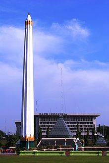

Tourist Place
This is one of the possible tourist spots here in Surabaya. The Heroes' Monument, or in Indonesian
called "Tugu Pahlawan", is a monument to remind the locals of the events that happened in November 10, 1945.
It is around 41.5 meters in height. It has a museum inside that shows the stuggles of the Surabayans at that
fateful day